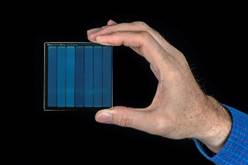
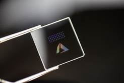
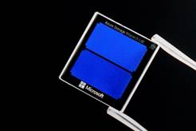

Ant Rowstron
Partner
Deputy Lab Director,
Microsoft
Research,
Cambridge,
UK.
Email: antr@microsoft.com
I am a Partner Deputy Lab Director at Microsoft
Research, Cambridge, UK, and I lead a team looking at future technologies for
the cloud, called the Cloud
Infrastructure Research Team. Many
of the projects we run in the Cloud Infrastructure are focused on creating and
exploring new optical-based technologies for the cloud (for more information
see #OpticsForTheCloud) across storage, compute and networking.
As part of the Cloud Infrastructure
Team, I set up and lead an embedded joint Microsoft Research/Azure Storage lab
called the “Azure Storage Research Lab” (ASRL). ASRL has the goal to develop
future storage technologies targeted at the cloud, and an example of the sort
projects the lab does is Project Silica which is looking at how to store
data in Fused Silica (basically glass) as a replacement for tape for long term
archival storage. For a rather old overview of Project Silica see our
HotStorage paper: Glass: A New Media for a New Era?
Project Silica has been my major focus for the last four or
so years. There has been a lot of media and Microsoft coverage of Project
Silica and the broader Optics For The Cloud Agenda since Satya talked about the
project in his keynote at Ignite on 4th Nov 2019.
|
 |
A key part of this is the announcement of the work we have
been doing with partners to write their content into glass. The picture of
the hand is showing a glass platter into which we have written a film (75x75x2mm
platter). To learn more about how we write the data take a look at this
animation: https://www.youtube.com/watch?v=6CzHsibqpIs |
|
 |
To give an idea of progress we are making in Project
Silica, here is an image taken around a year ago (in 2018), which shows a
25x25x2mm glass platter with the Azure logo, and a few dots. Each dot
represents a square of voxels and is a few tens of layers of data deep. |
|
 |
This is the same size platter today (25x25x2mm) into which
we have written a Windows 10 ISO image now filling the full platter all the
blue looking parts are full of data. |
Sounds exciting? We are always looking for really talented
people who would like to join the team, especially people who are interested in
internships or post-doc positions, from a wide range of backgrounds.
Recent
publications:
·
Patrick Anderson, Richard Black,
Ausra Cerkauskaite, Andromachi Chatzieleftheriou, James Clegg, Chris Dainty,
Raluca Diaconu, Rokas Drevinskas, Austin Donnelly, Alexander L. Gaunt, Andreas
Georgiou, Ariel Gomez Diaz, Peter G. Kazansky, David Lara, Sergey Legtchenko,
Sebastian Nowozin, Aaron Ogus, Douglas Phillips, Antony Rowstron, Masaaki
Sakakura, Ioan Stefanovici, Benn Thomsen, Lei Wang, Hugh Williams and Mengyang
Yang, “Glass: A New Media for a New Era?”,
HotStorage, July 2018. [ pdf
]
·
Andromachi Chatzieleftheriou, Sergey
Legtchenko, Hugh Williams, and Antony Rowstron “Larry: Practical Network Reconfigurability in the Data Center”,
NSDI, April 2018. [ pdf ]
·
Andromachi Chatzieleftheriou, Sergey
Legtchenko, Hugh Williams, and Antony Rowstron, Microsoft Research Sergey
Legtchenko, Hugh Williams, Kaveh Razavi, Austin Donnelly, Richard Black, Andrew
Douglas, Nathanael Cheriere, Daniel Fryer, Kai Mast, Angela Demke Brown, Ana
Klimovic, Andy Slowey, Antony Rowstron “Understanding
Rack-Scale Disaggregated Storage”, in
HotStorage, July 2017. [ pdf ]
·
Richard Black, Austin Donnelly, Dave
Harper, Aaron Ogus, Antony Rowstron “Feeding
the Pelican: Using Archival Hard Drives for Cold Storage Racks”, in HotStorage, June 2016. [ pdf ]
My full publication list (and
on Google
Scholar)
I
was deeply honored to be awarded the 2016
ACM SIGOPS Mark Weiser Award. I
am a systems researcher working at the intersection of Storage, Networking,
Systems and Distributed Systems. During my career, I have worked in several
areas, including structured overlays or Distributed Hash Tables (DHTs),
wireless routing protocols and even Robot Football (RoboCup’98). I worked on
one of the original DHTs, called Pastry
(Middleware’01), and of the first large-scale key-value stores (PAST SOSP’01).
I’m proud to say that the original Pastry paper written with Peter Druschel was awarded the "Middleware'2011 10-year
best paper award".
I try to select
research themes to work on that I believe will have an impact in the real world. Often it turns out my belief is
misplaced, but occasionally not! The work on distributed systems has had some
internal impact; Pastry
directly contributed to both the Windows DRT
API and the related Windows PNRP API (the former even includes a leaf set). LiveStation
licensed some of our P2P work around Pastry and SplitStream (SOSP’03). We evangelized the work on Squirrel
(PODC’02) to many teams, and then BranchCache was created.
Since
moving to focus more on storage; IOFlow
(SOSP’13) resulted in the SMB Bandwidth Limiting feature in Windows Server 2012
R2, and also inspired the end-to-end Storage QoS feature in Windows Server 2016
(see
blog).
Pelican (OSDI’14) is now owned by Azure.
Selected publications from my time
at Microsoft Research:
·
Sergey Legtchenko, Nicholas Chen,
Daniel Cletheroe, Antony Rowstron, Hugh
Williams, and Xiaohan Zhao “XFabric: A Reconfigurable In-Rack Network for
Rack-Scale Computers”, in NSDI, March 2016. [ pdf
]
·
Shobana Balakrishnan, Richard Black,
Austin Donnelly, Paul England, Adam Glass, Dave Harper, Sergey Legtchenko, A, Ogus, E. Peterson and A. Rowstron “Pelican: A
building block for exascale cold data storage” in OSDI, October 2014 [ pdf
]
·
Fahad R Dogar, Thomas Karagiannis,
Hitesh Ballani, and Antony Rowstron, “Decentralized Task-aware Scheduling for
Data Center Networks”, in SIGCOMM, ACM,
August 2014 [ pdf
]
·
Eno Thereska, Hitesh Ballani, Greg
O'Shea, Thomas Karagiannis, Antony Rowstron, Tom Talpey, and Timothy Zhu “IOFlow: A Software-Defined Storage Architecture” SOSP'13,
Farmington, PA, USA, November 2013. [ pdf
]
·
Christos
Gkantsidis, Dimitris Vytiniotis, Orion Hodson, Dushyanth Narayanan, Florin
Dinu, Antony Rowstron "Rhea: Automatic Filtering for Unstructured Cloud Storage", NSDI,
April 2013 [ pdf ]
·
Virajith Jalaparti, Hitesh Ballani, Paolo Costa. Thomas Karagiannis
and Antony Rowstron "Bridging the Tenant-Provider Gap in Cloud Services". Proceedings SOCC, Oct, 2012 [ pdf
]
·
Paolo Costa,
Austin Donnelly, Ant Rowstron, Greg O'Shea. "Camdoop:
Exploiting In-network Aggregation for Big Data Applications", NSDI, 2012 [
pdf
]
·
C. Wilson, H.
Ballani, T. Karagiannis and A. Rowstron. "Better Never than Late: Meeting
Deadlines in Datacenter Networks",Sigcomm,2011.
[ pdf
]
·
H. Ballani, P.
Costa, T. Karagiannis and A. Rowstron. "Towards Predictable Datacenter Networks",
Sigcomm, 2011. [ pdf
]
·
H. Abu-Libdeh,
P. Costa, A. Rowstron, G. O'Shea and A. Donnelly.
"Symbiotic routing in future data centers",
Sigcomm, 2010. [ pdf
]
·
D. Narayanan, A. Donnelly, E.
Thereska, S. Elnikety and A. Rowstron.
"Migrating server storage to SSDs: analysis of tradeoffs", EuroSys 2009. [ pdf
]
·
D. Narayanan, A. Donnelly, E.
Thereska, S. Elnikety and A. Rowstron. "Everest:
Scaling down peak loads through I/O off-loading",
OSDI, 2008. [ pdf]
·
T. Karagiannis, R. Mortier and A. Rowstron. "Network
exception handlers: host-network control in enterprise networks", Sigcomm, 2008 [ pdf]
·
D. Narayanan, A. Donnelly and A. Rowstron. "Write
Off-loading: Practical power management for enterprise storage", FAST,
2008 [ pdf ] (invited
to submit to ACM TOS)
·
D. Narayanan, A. Donnelly, R.
Mortier and A. Rowstron. "Delay Aware Querying with Seaweed", VLDB, 2006 [ pdf ]
(forwarded to the VLDB Journal best of 2006)
·
M. Caesar, M. Castro, E.
Nightingale, G. O'Shea and A. Rowstron, "Virtual
Ring Routing: Network routing inspired by
DHTs", Sigcomm,
2006. [ pdf ]
·
M. Costa, J. Crowcroft, M. Castro,
A. Rowstron, L. Zhou, L. Zhang, and P. Barham, "Vigilante: End-to-End
Containment of Internet Worms",
SOSP, 2005.[ pdf
]
·
M. Castro, M. Costa, and A.
Rowstron, "Debunking some myths about structured and unstructured overlays", NSDI, 2005. [ pdf ]
·
L. Zhuang, F. Zhou, B. Y. Zhao and A. Rowstron, "Cashmere: Resilient Anonymous Routing", NSDI, 2005. [ pdf ]
·
M. Castro, P. Druschel, A-M. Kermarrec, A. Nandi, A. Rowstron and A. Singh, "SplitStream: High-bandwidth multicast in cooperative environments", SOSP, 2003. [
pdf
]
·
M. Castro, P. Druschel, A-M. Kermarrec and A. Rowstron, "SCRIBE: A
large-scale and decentralized application-level multicast infrastructure", IEEE Journal on Selected
Areas in Communication (JSAC), October 2002. [ pdf ]
·
M. Castro, P. Druschel, A. Ganesh,
A. Rowstron, and D. S. Wallach, "Secure routing for structured peer-to-peer overlay networks",
OSDI, December 2002. [ pdf ]
·
S. Iyer, A. Rowstron and P. Druschel, "SQUIRREL: A decentralized, peer-to-peer web cache",
PODC, July 2002. [ pdf ]
·
A. Rowstron and P. Druschel,
"Pastry: Scalable, decentralized object location and routing for
large-scale peer-to-peer systems", Middleware, 2001. [ pdf ]
o
(10 year best paper
award from Middleware awarded in 2011)
·
A. Rowstron and P. Druschel,
"Storage management and caching in PAST, a large-scale, persistent peer-to-peer storage utility", SOSP, October
2001. [ pdf
]
·
A-M Kermarrec,
A. Rowstron, M. Shapiro and P. Druschel. "The IceCube approach to the reconciliation of divergent
replicas", PODC, 2001. [ pdf ]
Since
May 1999 I have been working at Microsoft Research in the UK, where today I am
a Partner Deputy Lab Director. My research interests are broad, covering the
spectrum of systems, distributed systems, storage, and networking. In May of
2010 I was elected as a Fellow of the British Computer Society. I received an
MEng degree in Computer Systems and Software Engineering in 1993 and a DPhil
degree in Computer Science in 1997 both from the University of York, UK. After
completing my DPhil studies, I joined Cambridge University in November 1996,
initially as a Research Associate in the Computer Laboratory and then as a
Senior Research Associate in the Engineering Department, Cambridge. During this
time, I was a consultant for the Olivetti and Oracle Research Laboratory (ORL)
(which became the AT&T Research Cambridge in 1998).
I have been involved or am on the
Program Committee or related for the following workshops and conferences:
EuroSys 2017, SC 2016, EUROSYS 2014
(co-chair), SIGCOMM 2012, SOCC 2012, SOSP 2011, Middleware 2011, MobiHeld 2011, Sigcomm 2010, NSDI
2010, Middleware 2010, MobiHeld 2010, IPTPS 2010,
Middleware 2009, PerCom 2009, Workshop co-chair Sigcomm 2009, Middleware 2008, FAST 2008, Middleware 2007,
INFOCOM 2007, ACM SIGCOMM 2006, EUROSYS 2006, IPTPS 2006, MobiShare
2006 (co-chair), DSN 2006, INFOCOM 2006, WORLDS 2005, P2P Economics workshop
2005, Euro-par 2005 (Track vice-chair), ICDCS 2005 (Track chair), IEEE INFOCOM
2005, SIGOPS EW 2004, ACM SIGCOMM 2004, WDDDM 2004, Coordination 2004,
ACM SIGCOMM 2003, ACM PODC 2003, IEEE OpenArch
2003, WWW 2003, SecCo 2003, IPTPS'02
(co-chair), International Workshop on Peer-to-Peer Computing 2002,
WETICE'02, ESAW'01, WETICE'01, ESAW'00